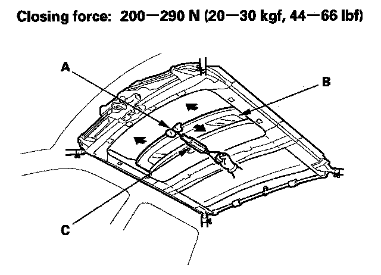
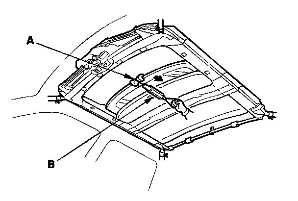

Closing Force and Opening Drag Check
Closing Force and Opening Drag Check1. Remove the headliner

2. Closing force check:
- With a shop towel (A) on the leading edge of the glass (B), attach a spring scale (C) as shown.
- Have an assistant hold the switch to close the glass while you measure the force required to stop it.
- Read the force as soon as the glass stops moving, then immediately release the switch and spring scale.
3. If the force in not within specification, remove the moonroof motor , then check:
- The gear teeth and the inner cable for breakage and damage. If the gear teeth are broken, replace the motor. If the inner cable is damaged, remove the frame , and replace the cable.
- Do the moonroof control unit input test . If the motor fails to run or doesn't turn smoothly, replace it.
- The opening drag. Go to step 4.

4. Opening drag check: Protect the leading edge of the glass with a shop towel (A). Measure the effort required to open the glass using a spring scale (B) as shown.
5. If the load is over 40 N (4 kgf, 9 lbf), check:
- The side clearance and glass height adjustment.
- For broken or damaged sliding parts. If any sliding parts are damaged, replace them.
6. Reset the moonroof control unit after reinstalling the moonroof motor.